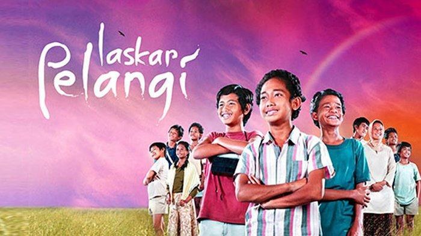

Mengkisahkan tentang Ikal anak asli Belitong yang berusaha keras mengejar mimpinya dengan bersekolah di salah satu SD yang hampir roboh bernama SD Muhammadiyah Gantong. Sebagian besar siswa tersebut berasal dari kalangan keluarga miskin seperti Lintang anak pesisir asal Tanjung Kelumpang yang tinggal bersama ayah dan tiga adik perempuannya.
Sekolah tersebut memiliki aturan bahwa sekolah bisa membuka kelas baru jika jumlah siswanya sudah mencapai sepuluh siswa-siswi. Setelah lama menunggu, siswa-siswi yang terkumpul baru mencapai sembilan siswa.
Ketika harapan tersebut hampir redup, datanglah seorang anak bernama Harun yang merupakan anak abk. Kehadiran Harun membuat sekolah ini akhirnya memiliki kelas baru.
Lima tahun kemudian tahun 1979, anak-anak SD Muhammadiyah menikmati kebahagian mereka di sekolah seperti anak-anak lainnya. Kadang-kadang kebahagian mereka membuat mereka sempat tidak menuruti apa kata Bu Muslimah. Tetapi dibalik itu semua, semangat mereka dalam belajar sangat tinggi. Seperti Lintang yang selalu datang telat karena harus menjaga adik-adiknya dulu sambil menunggu ayahnya pulang dari melaut, Lintang pun harus naik sepeda puluhan meter melewati rumput, menunggu buaya besar lewat, hingga akhirnya tiba di sekolah.
| Laskar Pelangi | |
|---|---|
|  |
|
| Sutradara | Riri Riza |
| Produser | Mira Lesmana |
| Ditulis oleh | Salman Aristo Riri Riza Mira Lesmana |
| Penata musik | Titi Radjo Aksan Sjuman |
| Sinematografer | Yadi Sugandi |
| Distributor | Miles Films Mizan Productions SinemArt |
| Tanggal rilis | 25 September 2008 |
Daftar Pemeran
Setiap warga negara berhak mendapatkan pendidikan.
Pasal 31 ayat 1